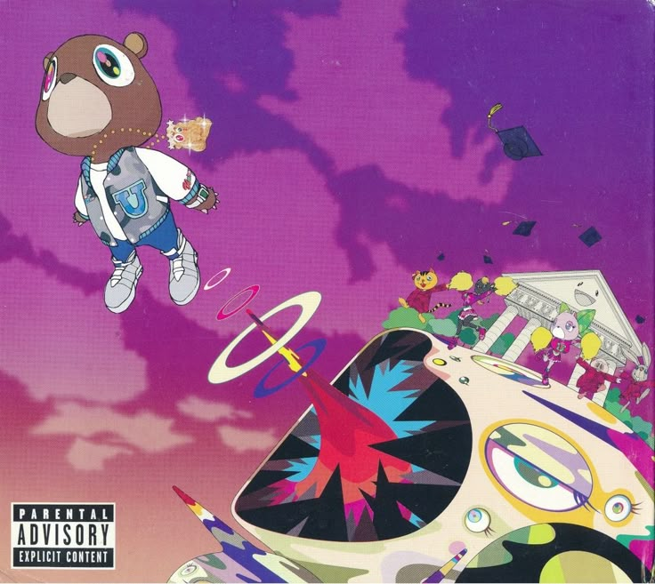
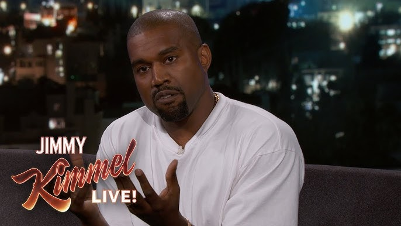
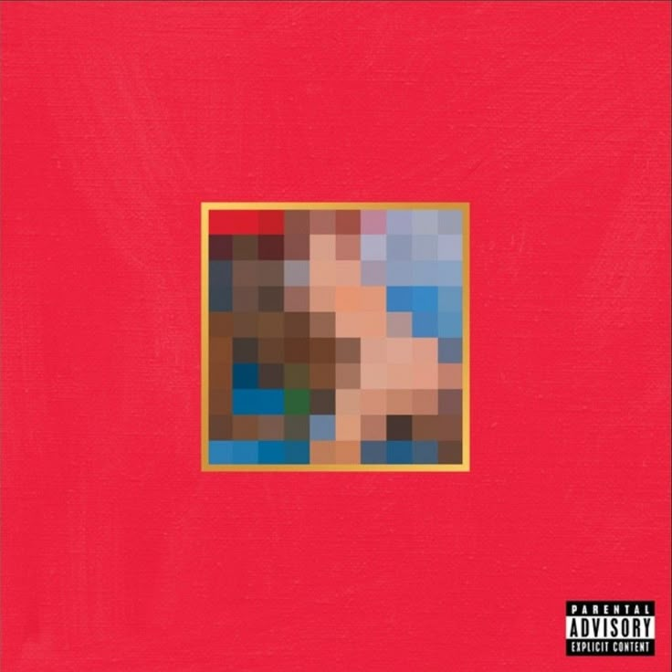
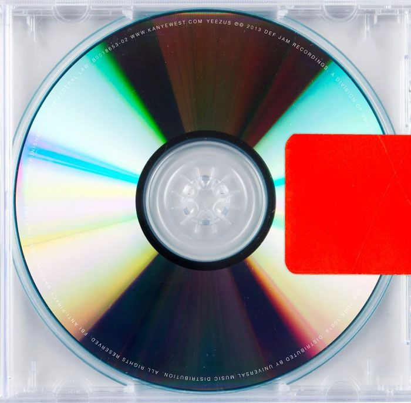
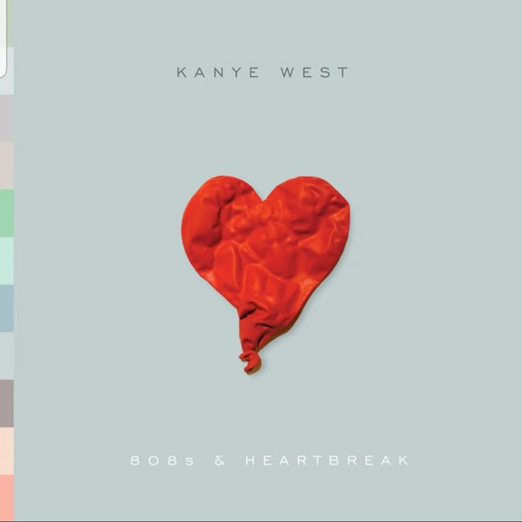
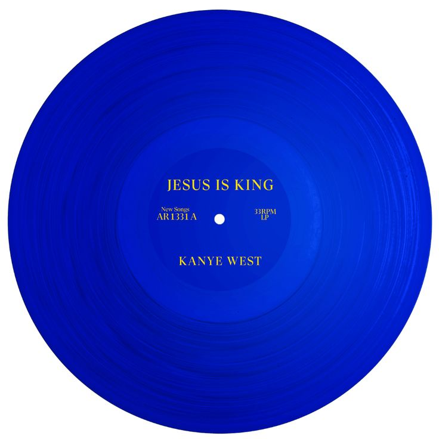
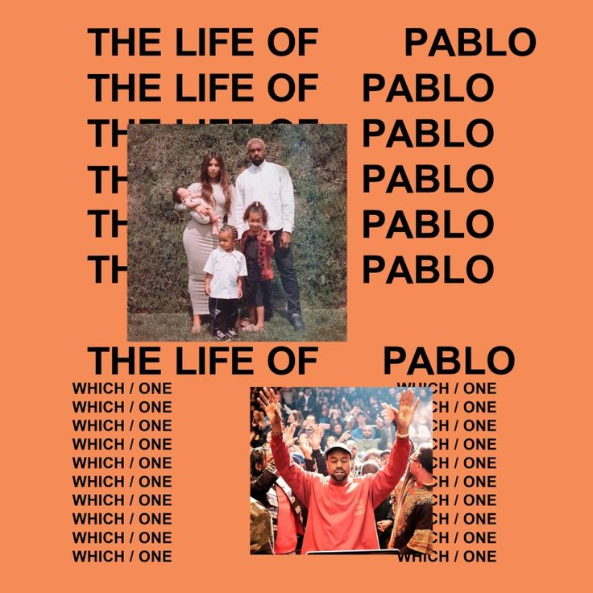
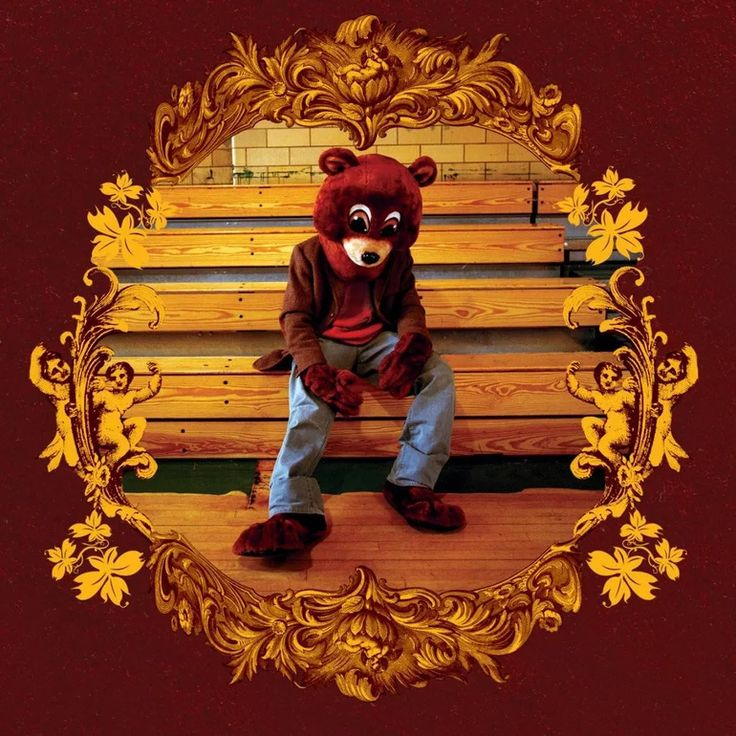
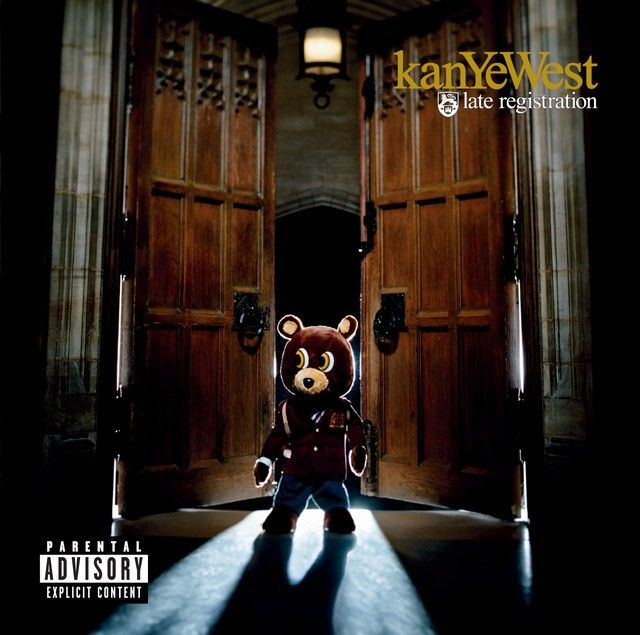

GRADUATION

Graduation
Graduation is the third studio album by Kanye West, released in 2007. It features a more electronic and stadium-style sound, with hits like Stronger and Good Life, and played a major role in shaping modern hip-hop.
Spotify
BIOGRAPHY

Click the image to watch the interview
Kanye West, born Kanye Omari West on June 8, 1977, in Atlanta, is an American rapper, singer, songwriter, record producer, and fashion designer. He was raised in Chicago, where he developed a deep interest in music and the arts from a young age. Before gaining fame as a rapper, Kanye first built his reputation as a producer, working with major artists and contributing to influential hip-hop projects.
He rose to widespread recognition with his debut album The College Dropout in 2004, which received critical acclaim for its unique blend of soulful samples and introspective lyrics. Over the years, he continued to evolve his sound with groundbreaking albums such as Late Registration, Graduation, 808s & Heartbreak, and My Beautiful Dark Twisted Fantasy. His music has explored a wide range of themes, including fame, personal struggles, relationships, and social issues, often pushing the boundaries of hip-hop and popular music.
Known for his innovative production style, Kanye has incorporated elements of soul, electronic, and experimental music into his work, influencing a generation of artists. Beyond music, he has also made a significant impact in the fashion world through his brand Yeezy, collaborating with major companies and redefining streetwear trends.
Throughout his career, Kanye West has won numerous awards and remains one of the most influential and talked-about figures in modern entertainment, recognized both for his artistic achievements and his bold, often controversial public persona.
DISCOGRAPHY







